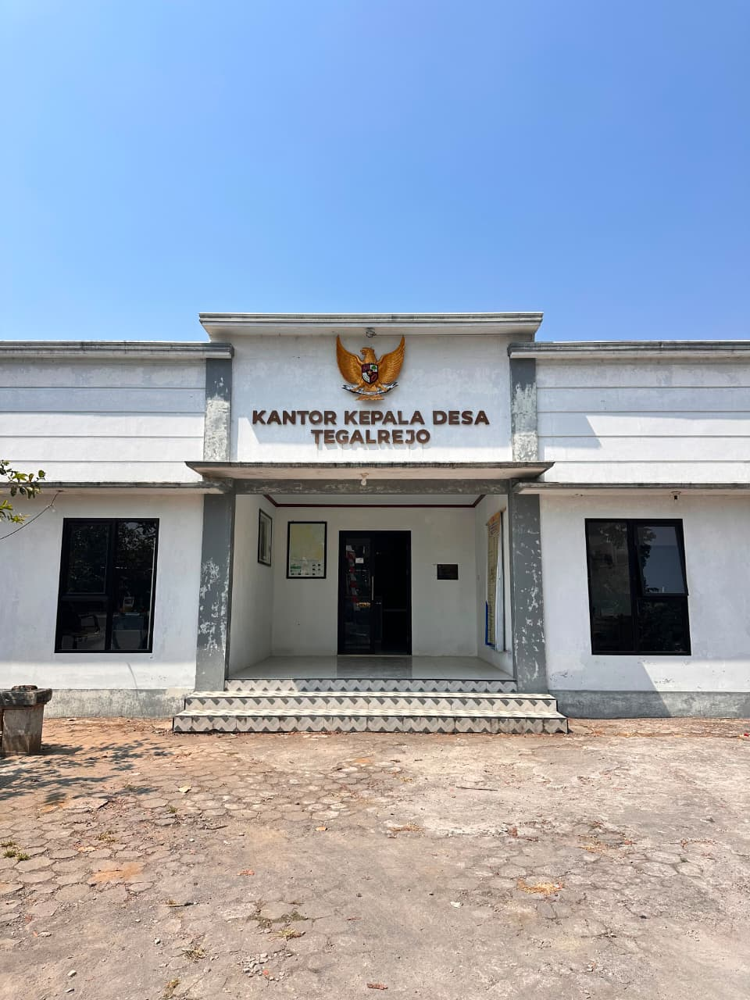

Mengenal lebih dekat sejarah, letak geografis, dan kehidupan masyarakat Desa Tegalrejo.
Desa Tegalrejo merupakan salah satu desa di Kecamatan Ngadirejo, Kabupaten Temanggung, yang terletak di lereng timur Gunung Sindoro. Nama "Tegalrejo" berasal dari kata "tegal" yang berarti ladang atau lahan kering, dan "rejo" yang berarti ramai atau makmur — menggambarkan harapan masyarakat akan tanah ladang yang subur dan kehidupan yang sejahtera.
Sejak dahulu, wilayah desa ini dikenal memiliki sumber mata air yang melimpah, salah satunya adalah Umbul Jumprit yang telah menjadi bagian penting dari tradisi spiritual masyarakat sekitar, termasuk umat Buddha yang menggunakannya sebagai sumber air suci dalam rangkaian perayaan Trisuci Waisak.
Letak desa yang berada di kawasan hutan lindung lereng Sindoro menjadikan Tegalrejo kaya akan sumber daya air, salah satunya adalah titik pertemuan aliran yang menjadi awal mula Kali Progo, sungai besar yang membentang hingga wilayah Yogyakarta.
Desa Tegalrejo merupakan desa yang terletak di sisi paling barat wilayah Kecamatan Ngadirejo, Kabupaten Temanggung, Provinsi Jawa Tengah. Berada langsung di kawasan lereng timur laut Gunung Sindoro, desa ini memiliki ketinggian sekitar 900–1.300 meter di atas permukaan laut (dpl) dengan titik tertinggi di sekitar area hulu Umbul Jumprit yang mencapai lebih dari 2.000 meter dpl. Kondisi ini menghasilkan udara yang sejuk sepanjang tahun dengan suhu rata-rata berkisar antara 16–20°C, serta bentang alam yang didominasi oleh hutan pinus, perkebunan tembakau, dan sayuran khas dataran tinggi.

Dalam menghadapi tantangan otonomi desa menuju Desa Tegalrejo yang TENTREM, MAREM, GANDEM, MAJU dan MANDIRI maka masyarakat Desa Tegalrejo melalui para pemangku kepentingan pembangunan desamempunyai harapan untuk mewujudkan masyarakat yang lebih sejahtera.
Desa Tegalrejo menjadi kawasan resapan air penting bagi wilayah Temanggung, dengan Umbul Jumprit sebagai salah satu mata air utama yang tak pernah kering.
Kawasan hutan pinus yang terjaga menjadi paru-paru desa sekaligus daya tarik wisata alam Wapitt yang sejuk dan asri.
Mayoritas warga bermata pencaharian sebagai petani tembakau, kopi, dan sayuran yang menjadi bagian dari kehidupan sehari-hari desa.
Melindungi hulu Kali Progo dan kawasan hutan pinus lereng Sindoro dari pencemaran lingkungan demi menjaga kestabilan pasokan air tawar daerah hilir.
Mengoptimalkan peran pemuda dan warga Tegalrejo dalam pengelolaan wanawisata serta UMKM guna meningkatkan roda perekonomian mandiri berbasis komunitas lokal
Menghormati kesakralan Umbul Jumprit sebagai situs petilasan purba dan sumber air suci ritual Tri Suci Waisak nasional dengan mematuhi tata krama setempat
Mengulas sejarah migrasi Ki Jumprit dari Majapahit serta nilai hidrologi mata air Sirah Progo sebagai sarana edukasi budaya bagi para pengunjung